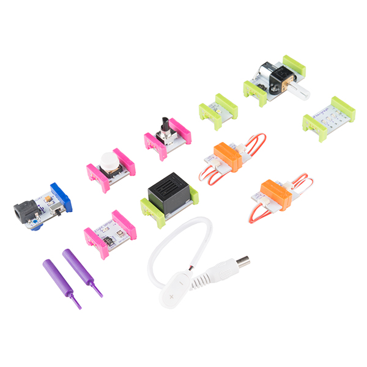

Robotic Arts Intro Fall 2018 (IA277.01)
- Instructor: Lucas Yasunaga Haroldsen (lharoldsen@mica.edu)
- Class Site: yasunaga.work/raif18
- syllabus: syllabus.pdf
- Resources: links.html
08/29: Speculations --- [Introductions]
Welcome to the class for Robotic Arts Introduction!
This class is an introduction class. If you have never worked with electronics don’t worry, you are in the right place. We will speculate, learn, and experiment with electronics and you will make mistakes. If you have done some electronics, great I want you to get more practice try some things you haven’t tried. So here are some rules.
- Don’t be afraid to make mistakes! The sole purpose of this class is experimentation. Experimentation is risky, but there is no innovation without experimentations.
- Take a risk! Try something you are not sure would work. You might discover something you weren’t looking for
- Don’t worry about making a masterpiece. Again, this is an intro class which surveys various ways of working.
- Work economically! Start small and build it up
- Make notes and sketches. Get in a habit of documenting your process before you forget about them. You will thank yourself.
- Pay attention! Often when you are working with electronics, small changes make big differences
- Take breaks. when you stare at your project too close and too long, you can't see anything any more. Go look at the sky
- Avoid hooking battery in backwards
- Don’t drink and solder
- Don’t take anything apart that plugs directly into the wall (yet)
Syllabus and Schedule
- Focus, Goals, Learning Objectives
- Grading
- Student responsibilities
- Schedule
Some inspirations and focus
Here are some things to get thinking about robots and electronics around us...
Relationships
Zaven Paré
Interactive experiment with robot (Geminoid - Robotic clone of human) A robot trying to act normal by perceiving human who is reacting to the robot trying to act “normal”
Hroshi Ishigro Laboratories
Conpanion Robot Paro
Therapudic companion robot project "paro"
Tweenbots by Kacie Kinzer
Interfacing
感情纏身装身具 / ACCESSORIES FOR WEARING EMOTIONS by Hazuki Katagai
Oscar Lhermitte Seeing in circles
materiality
Live electronic soldering performance by The Loud Objects
littleBits

littleBits is a modular and physical programing platform that affords quick electronic experimentation
github repository for little bits schimatics and documentationMaterials and Tools for this class
here are list of materials you will need to get for the first half of the semester. Second half of the semester there will be minimal required purchases.
- Arduino Leonardo (20 ~ $30)
- Micro USB (one that is commonly used on android phones)(5 ~ $7)
- 400+ pin Breadboard (prototyping board) (5 ~ $8)
planning to work on big project? try this! - Jumper wire kit(preformed or flexible)
- Small storage container for your projects
Electronic kit might save you money
There are many clones of Arduino and they might be a little cheaper, but they might give you a trouble along the way, or maybe they wont! If you are begginer to Arduino, get the Arduino brand ones to be safe. If you already own Arduino Uno, you don't have to buy Leonardo but please let me know.
Here are some places to buy Arduino:
- Amazon prime is fast!
- Arduino.ccArduino official website.
- Sparkfun shipping can be slow
Be sure to get the Micro USB cable!
HOMEWORK
Order Arduino!
- Please order Arduino Leonardo, Micro USB cable, Breadboard, jumper wire kit ASAP. We will be using these right away.
- Complete introductory survey that is shared with you on Google Drive